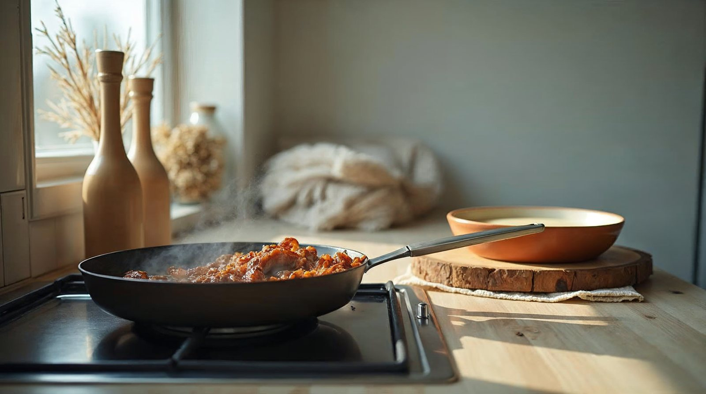
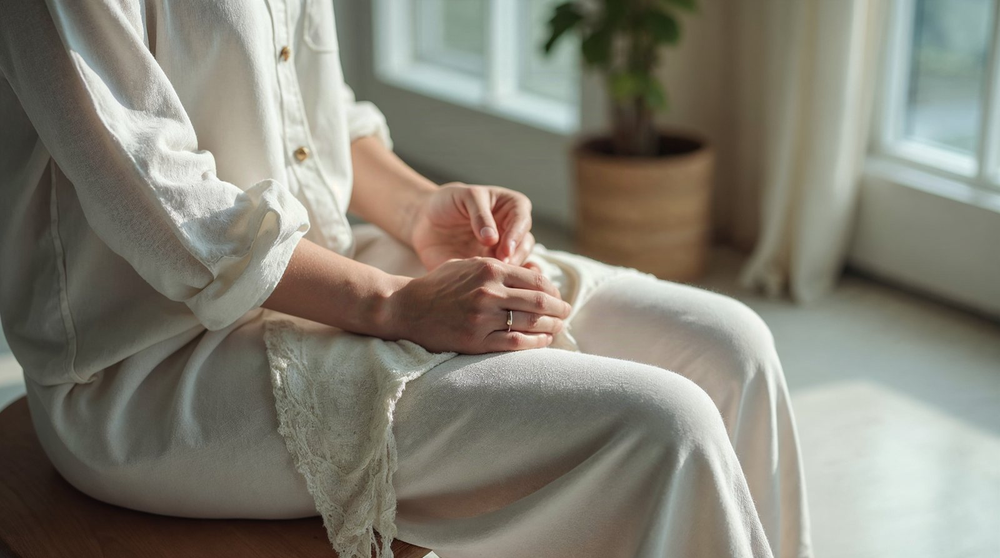
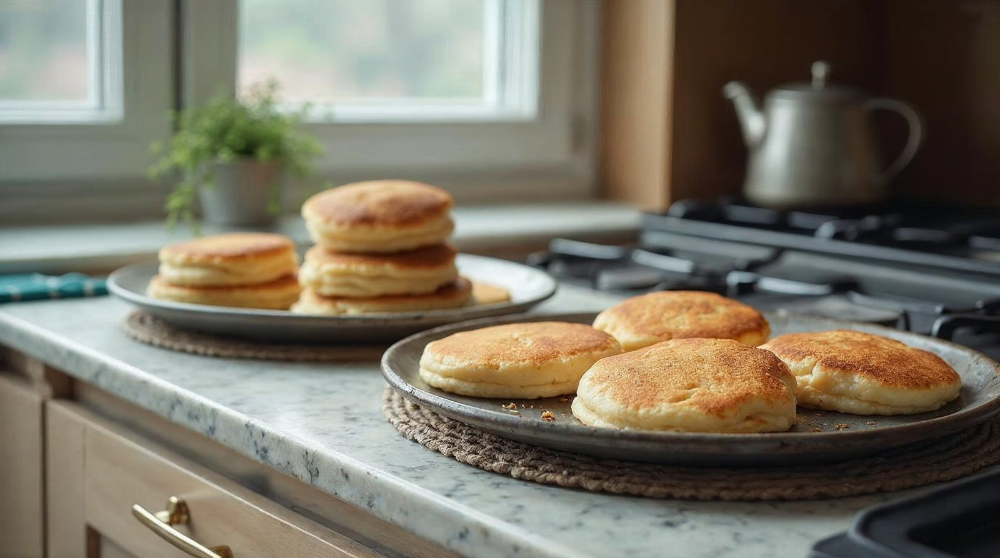

이종호 한의사 감수좋은꿈참사랑한의원 대표원장 (한의사 면허번호 19769)발행 2026-11-25 · 수정 2026-11-26
이 글의 차례
- 왜 이런 불편이 생길 수 있나요
- 오래 서서 생긴 허리 통증과 다른 통증은 어떻게 다를까요
- 왜 앉아서 쉬어도 허리가 개운하지 않을까요
- 먼저 이렇게 여쭙니다
- 일상에서 먼저 해 볼 수 있는 것
- 주방에서는 이렇게 서 보세요
- 종아리와 발도 함께 챙겨 주세요
- 찜질과 파스는 어떻게 쓸까요
- 명절 준비, 이렇게 나눠 보세요
- 명절이 끝난 뒤 며칠은 어떻게 지낼까요
- 다음 명절 전에 미리 준비할 것은 무엇일까요
- 진료를 받는 중이라면 명절 일정을 미리 알려 주세요
- 상황별 예시
- 스스로 점검해 보세요
- 얼마나 지켜보고 언제 상담할까요
- 한의원에서 함께 살필 수 있는 경우
- 이렇게 기록해 오시면 상담이 쉬워집니다
- 이런 증상은 먼저 확인이 필요합니다
- 함께 읽으면 좋은 글
설 음식을 준비하다 허리가 아프다면, 한 자세로 오래 서 있는 시간을 끊어 주는 것이 가장 먼저 해 볼 일입니다. 전을 부치고 나물을 무치며 싱크대 앞에 서너 시간 서 있으면 허리 아래쪽이 묵직해지고 종아리가 붓습니다. 해마다 명절이 지나면 허리를 짚고 오시는 분이 적지 않습니다.
예를 들어 오전 내내 전을 부치고 오후에는 설거지와 상차림이 이어지면, 앉아 쉰 시간은 점심 먹은 십 분이 전부인 날도 있습니다.
명절 준비는 하루로 끝나지 않는 경우가 많습니다. 장보기와 손질, 음식 만들기, 손님맞이와 설거지가 며칠에 걸쳐 이어지면 허리는 쉴 틈 없이 서 있는 자세를 견디게 됩니다. 저는 명절 뒤 허리가 아파 오신 분께 아픈 날만이 아니라 그 전 며칠을 어떻게 보내셨는지부터 여쭙습니다.
왜 이런 불편이 생길 수 있나요
- 같은 자세로 오래 서 있으면 허리 근육이 쉬지 못하고 계속 버티게 됩니다.
- 싱크대 높이가 맞지 않으면 허리를 살짝 숙인 채 일하게 됩니다.
- 딱딱한 바닥에 맨발이나 얇은 슬리퍼로 서면 발과 종아리 피로가 허리로 이어질 수 있습니다.
- 무거운 냄비와 상을 옮기는 일이 사이사이 끼어듭니다.
- 기름 냄새와 열기가 가득한 주방에서 오래 일하면 몸이 쉽게 지칩니다.
- 전을 부치며 프라이팬을 내려다보는 자세는 허리를 살짝 숙인 채 고정시킵니다.
- 손님 상을 차리고 치우며 허리를 굽혔다 펴는 동작이 하루에도 수십 번 되풀이됩니다.
- 명절 전후로 잠이 줄고 긴장이 이어지면 근육의 피로가 잘 풀리지 않습니다.
오래 서서 생긴 허리 통증과 다른 통증은 어떻게 다를까요
오래 서서 생긴 허리 통증은 대개 허리 아래쪽 양옆이 묵직하게 뻐근하고, 앉거나 누워 쉬면 조금씩 풀리는 모습을 보입니다. 다음 날 아침에 뻣뻣하다가 움직이면서 덜해지는 경우도 많습니다.
- 무거운 것을 들다 '뜨끔'한 뒤 갑자기 움직이기 어려워졌다면 근육이나 인대를 삐끗한 쪽을 먼저 떠올립니다.
- 엉덩이에서 다리 뒤쪽이나 바깥쪽으로 뻗치며 저리다면 허리에서 내려가는 신경 쪽 부담을 함께 살핍니다.
- 쉬어도 전혀 풀리지 않고 밤에 누워 있을 때 더 아프다면 지켜보는 기간을 길게 두지 않고 진료에서 확인합니다.
이 구분은 진료 때 설명을 돕기 위한 것이니, 언제부터 어떤 자세에서 아팠는지와 쉬면 어떤지만 기억해 오셔도 충분합니다. 명절 동안 무거운 것을 들었던 순간이 있었다면 그때의 느낌도 함께 떠올려 주세요.
왜 앉아서 쉬어도 허리가 개운하지 않을까요
오래 서 있다 앉으면 처음에는 편하지만, 바닥에 쪼그려 앉거나 낮은 소파에 깊이 파묻혀 앉으면 허리가 다시 둥글게 말려 또 다른 부담이 생깁니다. 서 있을 때 쌓인 피로가 앉는 자세에서 다른 방향으로 이어지는 셈입니다.
쉴 때는 등받이가 있는 의자에 엉덩이를 깊숙이 붙여 앉거나, 잠깐이라도 누워 무릎 아래에 베개를 받쳐 허리를 편하게 두는 것이 좋습니다. 몇 분 누워 쉬는 것이 낮은 의자에 오래 앉아 있는 것보다 허리에 덜 부담이 되는 분도 많습니다.

먼저 이렇게 여쭙니다
- 서 있은 지 얼마쯤 지나면 아프기 시작하나요?
- 앉거나 누우면 풀리나요, 계속 아픈가요?
- 허리를 뒤로 젖힐 때와 숙일 때 중 언제 더 불편한가요?
- 엉덩이나 다리로 뻗치는 통증, 저림이 있나요?
- 평소에도 오래 서는 일을 하시나요?
- 명절 준비를 며칠에 걸쳐 하셨나요, 하루에 몰아서 하셨나요?
- 무거운 상이나 냄비를 혼자 옮기셨나요?
- 예전에 허리로 치료를 받은 적이 있나요?

일상에서 먼저 해 볼 수 있는 것
- 30~40분마다 잠깐 앉거나 제자리에서 걷기
- 발밑에 낮은 받침을 두고 한 발씩 번갈아 올려놓기
- 쿠션 있는 실내화를 신거나 주방 매트 깔기
- 전 부치기처럼 앉아서 할 수 있는 일은 식탁에서 하기
- 무거운 것은 나눠 들고 옮길 때 몸을 비틀지 않기
주방에서는 이렇게 서 보세요
- 싱크대와 몸 사이를 주먹 하나 정도 띄우고, 배꼽이 싱크대 가장자리를 향하게 섭니다.
- 발은 어깨너비로 벌리고, 한쪽 발을 낮은 받침이나 싱크대 아래 문턱에 번갈아 올립니다.
- 칼질이나 설거지를 할 때 허리를 숙이기보다 무릎을 살짝 굽혀 높이를 맞춥니다.
- 아래 칸의 냄비를 꺼낼 때는 허리만 숙이지 말고 한쪽 무릎을 굽혀 몸을 낮춥니다.
- 오래 서 있어야 할 때는 30분마다 발뒤꿈치를 들었다 내리기를 열 번쯤 해 종아리를 움직여 줍니다.
종아리와 발도 함께 챙겨 주세요
오래 서 있으면 허리보다 먼저 발바닥과 종아리가 지칩니다. 발이 아프면 무게를 한쪽으로 싣거나 엉거주춤 서게 되고, 그 자세가 다시 허리에 부담을 줍니다. 그래서 허리를 지키려면 발밑부터 살피는 것이 좋습니다.
얇은 슬리퍼나 맨발보다는 바닥이 푹신한 실내화를 신고, 오래 서는 자리에는 주방 매트를 깔아 주세요. 하루 일을 마친 저녁에는 누워서 다리를 쿠션 위에 올려 두고, 발목을 천천히 돌려 종아리의 붓기를 풀어 줍니다. 미지근한 물에 발을 담그는 것도 하루의 피로를 덜어 주는 데 보탬이 됩니다.
종아리를 손으로 아래에서 위로 부드럽게 쓸어 올려 주는 것도 좋습니다.
찜질과 파스는 어떻게 쓸까요
명절 뒤 허리가 묵직하고 뻣뻣하다면 따뜻한 찜질이 대체로 편합니다. 다만 무거운 것을 들다 뜨끔한 직후 열감이 있다면 처음 하루 이틀은 차갑게 하는 쪽을 먼저 해 봅니다.
어느 쪽이든 수건을 한 겹 두르고 15분 안쪽으로 짧게 하며, 전기 찜질기를 켠 채 잠들지 않도록 합니다. 파스는 붙인 자리가 가렵거나 붉어지면 바로 떼고, 같은 자리에 겹쳐 붙이지 않습니다. 진통제를 드셨다면 이름과 횟수를 적어 두었다가 진료 때 알려 주세요.
명절 준비, 이렇게 나눠 보세요
명절 음식은 하루에 몰아서 하면 허리가 버티기 어렵습니다. 장보기와 손질은 하루 전에, 전 부치기와 나물은 당일 오전과 오후로 나누는 식으로 일정을 쪼개 보세요.
가족이 함께 모이는 명절이라면 일을 나누는 것이 가장 큰 도움이 됩니다. 전 부치기처럼 앉아서 할 수 있는 일은 식탁에서 여럿이 둘러앉아 하고, 무거운 상을 옮기거나 설거지하는 일은 돌아가며 맡으면 한 사람에게 부담이 몰리지 않습니다. 아이들에게는 수저 놓기나 그릇 나르기처럼 가벼운 일을 맡겨 함께하는 재미를 나눠도 좋습니다.
준비하는 음식의 양을 조금 줄이는 것도 방법입니다. 남은 음식을 정리하고 다시 데우는 일까지 생각하면, 넉넉하게 만드는 것이 허리에는 그만큼 일을 더하는 셈이기 때문입니다. 일하는 사이사이 앉아서 차 한 잔 마시는 시간을 일정에 미리 넣어 두면, 바쁜 날에도 쉬는 시간을 잊지 않을 수 있습니다.
명절이 끝난 뒤 며칠은 어떻게 지낼까요
명절이 끝나면 바로 출근과 집안일이 다시 시작됩니다. 허리가 묵직하다면 며칠은 무거운 장보기와 대청소를 미루고, 따뜻한 물로 샤워한 뒤 아프지 않은 범위에서 허리를 좌우로 가볍게 움직여 풀어 주세요.
누울 때는 무릎 아래에 베개를 받치거나 옆으로 누워 무릎 사이에 쿠션을 끼우면 허리가 편합니다. 아침에 일어날 때는 옆으로 돌아누운 뒤 팔로 바닥을 밀며 천천히 일어납니다. 출근길 계단과 지하철에서 오래 서 있어야 한다면 며칠은 가방을 가볍게 하고, 서 있는 동안 체중을 양발에 고르게 싣도록 신경 써 주세요.
다음 명절 전에 미리 준비할 것은 무엇일까요
해마다 명절 뒤 허리가 아팠다면, 명절이 다가오기 전부터 조금씩 준비해 두는 것이 좋습니다. 주방에 낮은 발 받침과 푹신한 매트를 미리 마련해 두고, 앉아서 일할 수 있는 높은 의자도 하나 챙겨 두세요.
가족과는 명절 일주일쯤 전에 누가 어떤 음식을 맡을지, 장보기와 설거지는 어떻게 나눌지 미리 이야기해 둡니다. 당일에 정하려 하면 결국 익숙한 사람에게 일이 몰리기 쉽습니다.
평소 허리와 엉덩이 근육을 조금씩 움직여 두는 것도 도움이 됩니다. 매일 저녁 10분쯤 걷거나, 누워서 무릎을 세우고 엉덩이를 천천히 들었다 내리는 동작을 아프지 않은 범위에서 해 보세요. 어떤 동작이 맞는지는 진료 때 허리 상태를 보고 함께 정해 드립니다.
진료를 받는 중이라면 명절 일정을 미리 알려 주세요
허리로 진료를 받고 계시다면 명절에 며칠 동안 어떤 일을 하실지 미리 말씀해 주세요. 그 기간에 특히 조심할 동작과 쉬는 간격을 함께 정하고, 명절이 끝난 뒤 다시 오셨을 때 무엇을 비교할지 미리 짚어 둘 수 있습니다. 명절 동안의 일을 짧게 메모해 오시면 더 좋습니다.
상황별 예시
- 예를 들어 맏며느리로 이틀 동안 장보기부터 차례상 준비까지 도맡은 분의 경우, 명절 다음 날 아침 허리가 바로 펴지지 않고 종아리까지 묵직할 수 있습니다. 며칠은 무거운 일을 가족에게 맡기고 누워 쉬는 시간을 늘리며 움직임이 편해지는지 봅니다.
- 예를 들어 평소 사무실에 오래 앉아 일하는 분이 명절에 하루 종일 주방에 서 있었던 경우, 익숙하지 않은 자세에 허리 아래가 뻐근할 수 있습니다. 출근 뒤에는 한 시간에 한 번 일어나 걷는 것부터 챙깁니다.
- 예를 들어 예전에 허리를 삐끗한 적이 있는 분이 무거운 상을 혼자 옮기다 허리가 뜨끔한 경우, 처음 며칠은 움직임을 줄이고 상태를 가까이 살피는 것이 좋습니다.
스스로 점검해 보세요
- 서 있은 지 몇 분쯤 지나면 아프기 시작하는지 확인했다.
- 앉거나 누우면 풀리는지, 그대로인지 살펴보았다.
- 허리를 숙일 때와 젖힐 때 중 언제 더 불편한지 비교했다.
- 엉덩이나 다리로 뻗치는 느낌, 저림이 있는지 살폈다.
- 종아리가 붓거나 밤에 쥐가 난 적이 있는지 떠올려 보았다.
- 명절 전에도 허리가 불편했던 적이 있는지 돌아보았다.
얼마나 지켜보고 언제 상담할까요
- 쉬는 시간을 늘리고 자세를 바꾸면서 며칠 사이 묵직함이 조금씩 덜해진다면 생활 관리를 이어 가며 지켜볼 수 있습니다.
- 일주일이 지나도 아침마다 허리가 잘 펴지지 않거나, 조금만 서 있어도 아픔이 다시 시작된다면 진료에서 확인해 보시길 권합니다.
- 삐끗한 듯 갑자기 아파 움직이기 어렵다면 처음 며칠은 가까운 간격으로 상태를 살피는 경우가 많습니다.
한의원에서 함께 살필 수 있는 경우
- 명절이나 김장처럼 큰일을 치른 뒤마다 허리가 아픈 경우 서는 자세와 허리 주변의 긴장을 함께 살핍니다.
- 오래 서면 종아리가 붓고 쥐가 나는 경우 다리의 피로와 순환을 함께 살핍니다.
- 쉬어도 며칠째 묵직함이 남는 경우 골반과 엉덩이 근육까지 함께 살핍니다.
좋은꿈참사랑한의원에서는 모든 분께 맥부터 짚으며 불편한 동작과 시간대를 여쭙고, 서 있는 자세와 허리를 숙이고 젖히는 움직임, 다리의 힘과 저림을 확인하고, 필요하다고 판단될 때 아픈 곳과 주변을 눌러 보거나 초음파로 살핀 뒤, 상태에 맞춰 침·약침·추나 등을 정합니다. 귀가 전에는 집에서 지켜볼 점과 다음에 확인할 일을 알려 드립니다.

이렇게 기록해 오시면 상담이 쉬워집니다
- 서서 일한 시간과 통증이 시작된 시점
- 편해지는 자세와 더 아픈 자세
- 다리 저림이나 붓기가 있었는지
- 먹은 진통제나 붙인 파스
- 명절 준비를 한 날짜와 하루에 서 있던 시간
- 아침에 일어날 때와 저녁 무렵의 아픈 정도(0~10)
- 종아리 붓기나 밤에 쥐가 났는지
이런 증상은 먼저 확인이 필요합니다
- 다리 힘이 점점 빠지거나 발끝 감각이 둔해지는 경우
- 대소변 조절이 어렵거나 엉덩이·사타구니 감각이 둔해지는 경우
이런 신호가 있으면 한의원보다 가까운 병원이나 응급실을 먼저 찾으세요.
함께 읽으면 좋은 글
- 명절을 보내고 나면 온몸이 몸살처럼 쑤시고 손목·허리가 아픈 명절 증후군은 어떻게 살피나요?
- 김장 때 바닥에 쪼그려 앉아 일한 뒤 허리와 무릎이 아프면 어떻게 살피나요?
- 출퇴근 지하철에서 오래 서 있으면 허리가 뻐근할 때는 어떻게 살피나요?

여쭙는 것
- 서 있은 지 얼마쯤 지나면 아프기 시작하나요?
- 앉거나 누우면 풀리나요, 계속 아픈가요?
- 허리를 뒤로 젖힐 때와 숙일 때 중 언제 더 불편한가요?
생활에서 해 볼 것
- 30~40분마다 잠깐 앉거나 제자리에서 걷기
- 발밑에 낮은 받침을 두고 한 발씩 번갈아 올려놓기
- 쿠션 있는 실내화를 신거나 주방 매트 깔기
한의원에서 함께 살필 것
- 명절이나 김장처럼 큰일을 치른 뒤마다 허리가 아픈 경우 서는 자세와 허리 주변의 긴…
- 오래 서면 종아리가 붓고 쥐가 나는 경우 다리의 피로와 순환을 함께 살핍니다.
- 쉬어도 며칠째 묵직함이 남는 경우 골반과 엉덩이 근육까지 함께 살핍니다.
먼저 확인이 필요한 신호
- 다리 힘이 점점 빠지거나 발끝 감각이 둔해지는 경우
- 대소변 조절이 어렵거나 엉덩이·사타구니 감각이 둔해지는 경우
한눈에 보는 표
| 구분 | 핵심 |
|---|---|
| 여쭙는 것 | 서 있은 지 얼마쯤 지나면 아프기 시작하나요? 앉거나 누우면 풀리나요, 계속 아픈가요? |
| 생활에서 해 볼 것 | 30~40분마다 잠깐 앉거나 제자리에서 걷기 발밑에 낮은 받침을 두고 한 발씩 번갈아 올려놓기 |
| 한의원에서 함께 살필 것 | 명절이나 김장처럼 큰일을 치른 뒤마다 허리가 아픈 경우 서는 자세와 허리 주변의 긴장을 함께 살핍니다. 오래 서면 종아리가 붓고 쥐가 나는 경우 다리의 피로와 순환을 함께 살핍니다. |
| 먼저 확인이 필요한 신호 | 다리 힘이 점점 빠지거나 발끝 감각이 둔해지는 경우 대소변 조절이 어렵거나 엉덩이·사타구니 감각이 둔해지는 경우 |
자주 묻는 질문
복대를 하고 일해도 되나요?
무거운 것을 옮기는 동안 잠깐 쓰는 것은 괜찮지만, 온종일 조이는 것은 권하지 않습니다. 필요 여부는 상태를 보고 함께 이야기합니다.
명절 연휴에도 진료하나요?
토·일·공휴일은 09:30~15:00(점심시간 없음)에 진료합니다. 연휴 일정은 바뀔 수 있으니 방문 전 전화로 확인해 주세요.
허리가 아플 때 스트레칭을 세게 해도 되나요?
통증이 심할 때 세게 늘리는 것은 피하고, 아프지 않은 범위에서 가볍게 움직이는 정도가 좋습니다.
명절 전에 미리 진료를 받아도 되나요?
해마다 명절 뒤 허리가 불편했다면 미리 오셔서 지금 상태와 조심할 동작을 함께 살펴볼 수 있습니다.
좋은꿈참사랑한의원은 재진 때 지난번 이야기부터 이어서 여쭙니다. 진료시간과 예약은 오시는 길에서 확인하세요.
어디서 상담받을 수 있나요?
좋은꿈참사랑한의원은 서울 동작구 만양로2길 2 신성빌딩 3층·5층(서울 동작구 상도동, 7호선 상도역 3번 출구 근처)에 있습니다. 한의사 3명(이종호 대표원장, 조영기 수석진료원장, 정원영 진료원장)이 진료합니다. 진료시간은 평일 09:30~20:00(점심 13:00~14:00), 토·일·공휴일 09:30~15:00이며, 방문 전 전화로 확인을 권합니다. 예약은 네이버 예약, 카카오톡 상담, 전화 02-815-7510로 받습니다.
이 글은 일반적인 건강 정보이며 개인의 진단이나 치료를 대신하지 않습니다. 증상이 있거나 복용 중인 약이 있다면 진료를 통해 확인하세요. 치료 효과는 개인마다 다를 수 있습니다.
작성 기준: 일반적으로 알려져 있는 건강 정보를 참고해 정리했습니다(대표원장 감수). 증상 기록은 1~2주 동안 하루 1회, 비슷한 시간에 적어 오시면 지난 상태와 비교하기 쉽습니다.